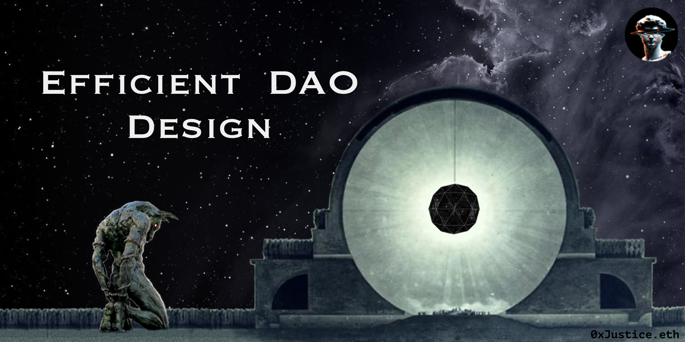

Efficient DAO Design
Originally published at https://paragraph.com/@banklessdao-2/efficient-dao-design

DAO Operators are feeling the pain of coordination, communication, and execution failure. Is this the future we have envisioned? Are we really on the path to constructing new Digital Nations? Many veteran operators have even stated that the DAO construct is intrinsically inefficient.
I have good news for you: Decentralization is not only compatible with efficient execution; it requires it.
The bad news is that efficiency doesn't come for free. It must be injected through careful organizational design. In this article, we'll unpack these claims and their implications. We’ll then review a possible inspiration for such a design and try to apply it all in a DAO context.
The Properties of Efficient Design
Efficiency is Decentralized
Decentralization is necessary for maximum efficiency. We can deduce this truth from multiple independent spheres of science.
In cybernetics, the Conant-Ashby Theorem states that every system regulator must have an internal model of the system it regulates. A natural consequence of this is the darkness principle, which states that each element in a system is necessarily ignorant of the system's behavior as a whole. The academic response to both observations has been to admit that self-organizing systems must delegate control to subsystems closer to the information needed for control. Distributed control is required for complex adaptive systems to work.
In economics, the Local Knowledge Problem is the observation that the data required for rational economic planning is distributed among individual actors and thus unavoidably exists outside the knowledge of a central authority. Again, we are stuck in unavoidable ignorance if we try to control a system of free agents centrally. Here too, efficiency requires the adoption of decentralized decision-making.
Political philosophy has the Subsidiarity Principle. This principle argues that the smallest, lowest, and least centralized political authority should handle as many matters as possible. A central authority should have a subsidiary function performing only those tasks that more immediate local levels cannot.
All of the above concepts communicate the same message. They all speak to the idea that individuals closest to a problem should make the decisions. This principle is a core axiom of sociotechnical design, which argues that the final design of work systems must be done by those who do the work. Otherwise, they fail to account for crucial system components often unseen by those not directly involved at that level.
Decentralization isn't one way of doing things — it's the only way in complex adaptive systems. It's the edge computing of efficiency.
Efficiency Must be Designed
Efficiency is the result of careful org design. This is implied by the very term “organization” and a consequence of the Theory of the Firm and Conway's Law. The premise is that individuals must organize themselves, their interactions, and their outputs to produce complex and desirable goods. This is hard, yet many DAOs expect to grow into efficiency simply by virtue of being decentralized. Productive efficiency is not emergent. The only things we get for free are entropy, coordination failure, and the tragedy of the commons.
As Web3 thinkers frequently compare DAOs to biological organisms, it's tempting to assume that optimum structures and flows will emerge by themselves through a kind of Darwinian emergence. This natural selection may be valid for the ecosystem but not for any particular DAO. The treasury will empty faster than you can cycle through every possible combination of organizational design. The Moloch meme rests on the premise that we can slay coordination failure through intelligent engineering, not that it happens automagically.
Decentralized systems can be built by centralized execution. Bitcoin was not designed by committee.
Design is Often Componentized (and even Hierarchical!)
Efficient design is often layered, specialized, and sometimes even hierarchical. The meme of DAOs destroying all hierarchy may be too strong and appealing to qualify with nuance. But the inescapable reality is that great design is often hierarchical. This is natural and not merely the product of human social dynamics.
We can use alternative terms like namespace, scope, and abstraction to communicate the same concept—specialized and layered responsibility. Orgs need scoped concerns to reduce cognitive load and coordination overhead. This fact doesn't equate to a command and control or dictatorial government.
DAOs do not have to be flat orgs.
I mention this because we may be inadvertently short-circuiting our efforts at good design if we rule out this pattern from the outset. What's important is to avoid exploitative entities. Each abstraction level should increase, not extract value from the system.
We must remember that the network is decentralized; not every individual or organizational unit that comprises it. Ignoring this is a trap and has been the death of many well-intentioned projects that never shipped because they got mired in premature and recursive decentralization efforts.
Efficient Design Inspiration
These design properties may give us insight, but what about real-world examples? I believe we can find them by looking at companies organized as Agile Networks. The Haier Corporation is one such example.
Haier is a 35 billion dollar appliance company that has arranged itself into 4000 microenterprises (ME). Each ME is free to form and evolve with little central control and falls into one of three functional archetypes:
-
Transformers serve existing evergreen product lines.
-
Incubators serve new and emergent business lines.
-
Nodes sell component products and services such as design, manufacturing, and human resource to the other two customer-facing business lines.
This structure works together to produce an incentive-aligned, customer-facing, decentralized platform. Let's look at each of the properties of this setup.
Independently Incentivised
At Haier, all MEs stand or fall by their own merits and are free to interact with each other however they see fit. The main business lines can pick another supply node if they fail to perform. If a business line goes out of business, its service nodes lose a customer. If an ME believes an external provider would better meet its needs, it can go outside for services.
How does this relate to DAOs? Relying exclusively on a shared token is insufficient incentive alignment. Businesses don't grind and make sacrifices for the sake of a national currency. They do it to win for themselves, and if they cannot deliver, they cease to exist. We cannot exclude competition and the survival instinct without serious negative consequences. Without these incentives, teams will budget based on historical spending instead of anticipated investment returns.
Customer Facing
Haier predominantly orients organizational units around customer-facing lines of service. Everyone is directly accountable to their customers. Haier has a strict policy of not funding new lines of business until customers validate a product. Haier CEO, Zhang Ruimin, likes to say that they no longer pay their employees because they are instead paid directly by the customer.
There is much we can learn from this. The DAO treasury is not the customer. The ultimate success metric for a DAO is not proposals asking for distributions but the number of launched products with paying customers resulting in treasury inflows and increased network value.
We talk a lot about democracy in Web3, but one of the purest forms of democracy is the free market, where individuals vote with their resources. The customer's "vote" should be the ultimate priority. The dangerous alternative is a kind of Santa Clause economics where everyone votes yes to everyone's budget proposal because they want them to vote yes to their own.
Decentralized Platform
Haier functions more like a network and launch platform than a singular corporation. Small autonomous teams make decisions, and Haier focuses on creating the optimum conditions for launching those teams. Ruimin describes this construction as "small pieces, loosely joined." This maxim is a well-known IT and organizational design pattern that DAOs should internalize.
From this perspective, we can view DAOs as app stores and economies rather than mega Corps or monoliths. We can view them as networked incubators and not as individual businesses. This framing has massive ramifications for strategic prioritization because it allows us to focus on identifying any great opportunity and the project launch experience rather than a predefined product space.
2023 will be the year of unbundling DAOs. Out: monolithic DAOs with high overhead costs + governance. In: modular DAOs with core team + micro DAOs that plug into the org.
One venture capitalist has described Haier as "a giant search function scanning the battlefield and identifying the most promising opportunities." DAOs can uniquely amplify this dynamic if we leverage them as launch platforms. See DAOs as novelty search engines.
Applying Efficient Design to DAOs
These observations may be interesting, but how can they be implemented and applied to an already operational DAO? The good news is that this is not a challenge unique to DAOs. There's an established body of research called Team Topologies and a technique called an Inverse Conway Maneuver we can apply for our use.
This approach and recommendations build on the premise that your organization's output will mirror your organizational configuration (Conway's Law) and that you can internally reorganize around a desired outcome to create greater efficiency.
These illustrations build on my previous work detailed in Rethinking the DAO Contributor Funnel. The bottom half of the diagrams views the DAO from the side, while the top half views it from the top. We’ll be zooming in on the team area for what follows.
Step 1: Solidify Existing Value Streams
Identify how the DAO makes money, then independently incentivize those product teams proportional to their success. You can do this through a revenue split. What thing of value are you trying to produce? Organize around it. Is it a podcast? Organize around extended learning materials linked to episodes or by making other similarly themed shows.

I don't believe many DAOs have answered this question yet, but the answer is pivotal. Who the customers are and what they need determines everything else. Once you identify the value streams, solidify them through on or off-chain agreements. Solidification means establishing an on-chain revenue split or legal agreement to enforce financial agreements. This explicit workstream crystalization step may sound overboard to some, but money has a way of overriding good vibes if clear contracts are absent.
Step 2: Optimize the Contributor Experience
The second product of any DAO is the DAO platform itself. The DAO is the innovation engine, and its customers are the contributors. For this reason, we should distinguish the DAO platform from the value streams it supports. As nations compete for business domicile, DAOs compete for skilled contributors and promising projects. This competition should take the form of creating increasingly efficient onboarding, reputation, and project funding systems and experiences.

What is the quality of the launch experience? How is new talent sourced to existing value streams? If current value streams aren't making money, we must prepare the soil for future ones that will.
Step 3: Introduce Enabler Teams
Introduce enabler teams to provide commoditized services incentivized around the main workstreams. We distinguished the platform from the value streams in the last two steps. In this step, we identify opportunities for scale and address them through consolidated service teams. These could be web design, legal services, or social media management.

This step acknowledges the reality of economies of scale and the principle of core competency. These service teams will free teams to do the unique thing they do well and not get weighed down by auxiliary concerns. All value streams greatly benefit from these commoditized internal services provided in scale-efficient ways. An enabler team that makes websites or sets up legal wrappers for incubated projects is of tremendous value.
Step 4: Practice Timeboxed Iterations
Lastly, operate within multiple reporting, funding, shipping, and governance cycles. These should be weekly, bi-weekly, monthly, and quarterly iterations. No perfect structure exists; only ones fit for a time and context. This reality requires DAOs to be constantly evolving and experimenting. Establishing fast feedback loops and more opportunities to inspect and adapt is essential. Here again, we have Haier's CEO as an example.
".. it's impossible to engineer a complex system from the top down. It has to emerge through an iterative process of imagination, experimentation, and learning. When asked how Haier can accelerate its transformation, he has a simple answer: Run more trials and replicate the most successful ones faster because revolutionary goals are best achieved through evolutionary means." - Zhang Ruimin, Haier CEO.
The simplest way to start doing this is to adopt weekly demos where all working groups present their progress and blockers and to practice "DAO seasons" with limited budgets and specific goals. These events are set times to inspect and adapt and are essential to creating feedback loops. These assumptions and practices build on Gall's Law which says that complex systems are built on simpler ones that worked prior. See Chase Chapman's Evolutionary Organizations.
Conclusion
DAOs need Architects, not just Operators, and more structure, not less. This sentiment is not a violation of decentralization. The almost universally accepted idea that all complex work can be decomposed into small bountied tasks and metered out to the masses is only one example of a design anti-pattern we desperately need to shed. We must do better.
A failure to execute and efficiently deliver may be a more significant threat to DAOs than government opposition. Resources will be wasted, and faith lost among contributors. If we exclusively design against capture at the expense of efficiency, we’ll eventually find there is nothing left worth capturing.
There is an "allergy" in DAOs to anything that feels familiar. This is naive. We can't design DAO hyperstructures in a historical or academic vacuum. A shared enemy is a powerful force for alignment, but failure is inevitable if that shared enemy is history. We are fortunate to have thousands of years of experience to build on. Let's use them.
The rule of Chesterton's Fence warns us about removing fences before understanding why they were originally erected. Our task is to amplify what's historically worked and minimize what hasn't through coordination programming and incentive engineering.
I'm convinced our most promising sources of design inspiration may come from Agile, Lean, and Kanban philosophy and methodologies. Team Topologies is only one example we've explored here, but this video shows the dramatic overlap of our thinking and purposes.
Armed with these resources and the newly emerged DAO construct, we may finally have the means to slay Moloch and unleash an entirely new era of human ingenuity. We have truly started down the path of a second renaissance, one that may culminate in a technological singularity not dominated merely by AI but by humans wielding the powers of AI.
Special thanks to all the operators who weighed in and gave extensive feedback on this article: Mateusz Rzeszowski, Gcalderiso.eth, siddhΞARTa.eth, Armchairfuturist.eth, Links, K3nn.eth, and Senad.eth. And a special thanks to the GLF22 team. The way they leveraged non-DAO native thinkers to inject historical and academic insights into DAO thought leaders' mental space is precisely what we need more of.
Originally published on BanklessDAO